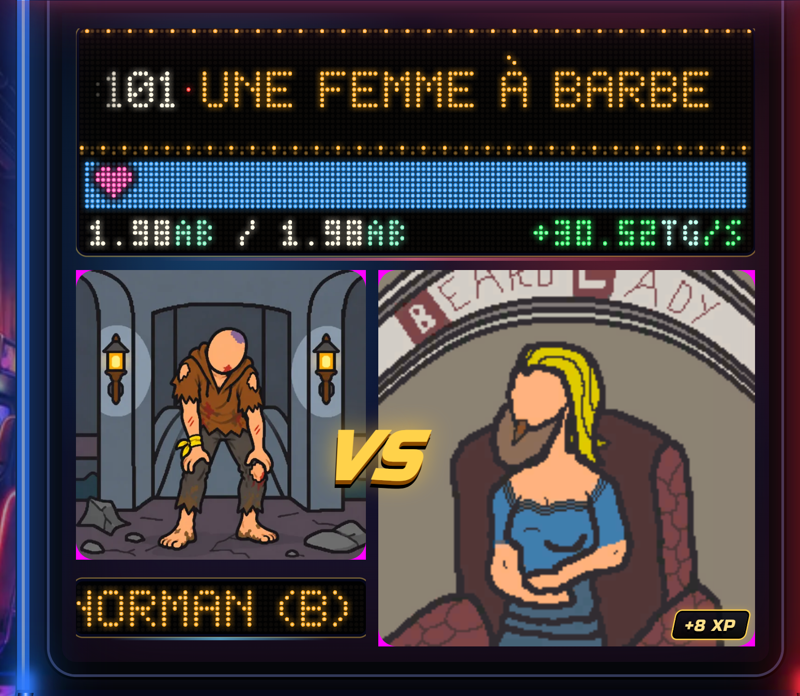
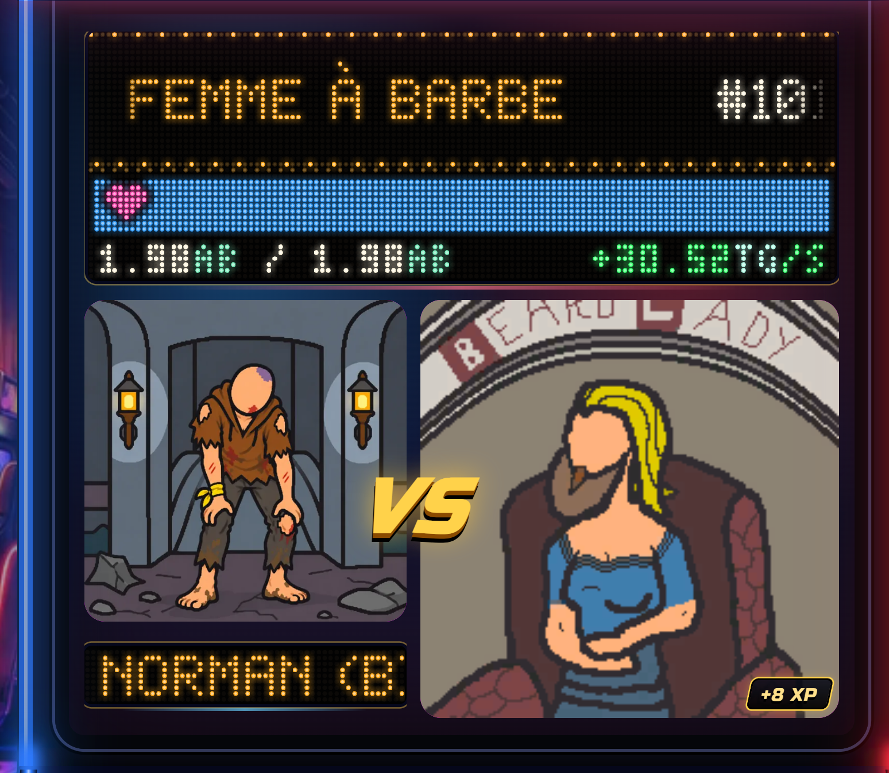
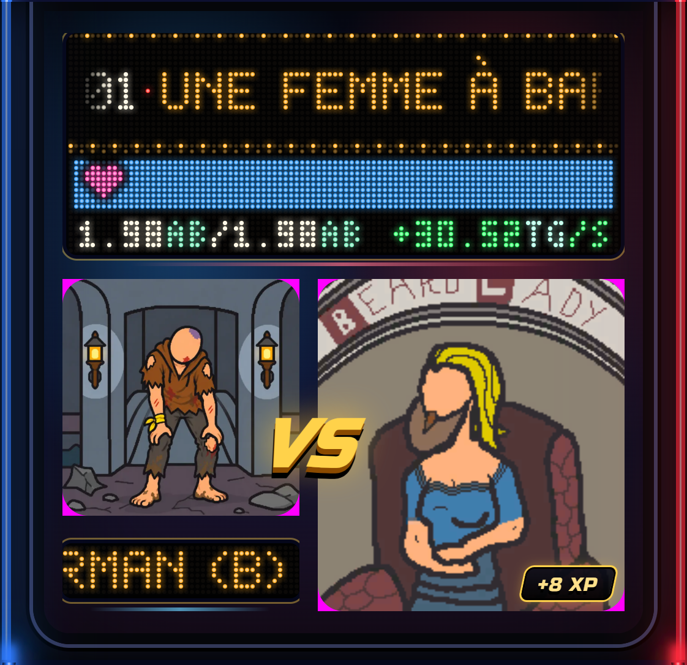
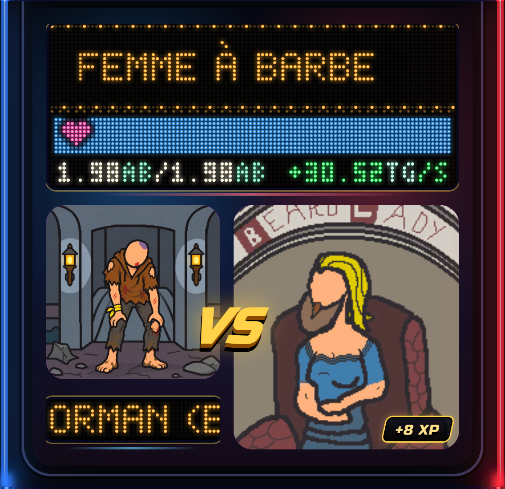

1. PC 1400 px : le duel complet
2. PC : diagnostic (fond du cadre des images peint en magenta : tout ce qui est magenta est le coin carre visible)
AVANT : 2 226 px magenta
APRES : 14 px (liseré d'anticrenelage)
3. PC : zoom x6, coin haut-gauche de l'image du joueur et coin bas-droit de l'image du boss
4. Telephone 390 px
Diagnostic avant : 3 019 px
Diagnostic apres : 41 px